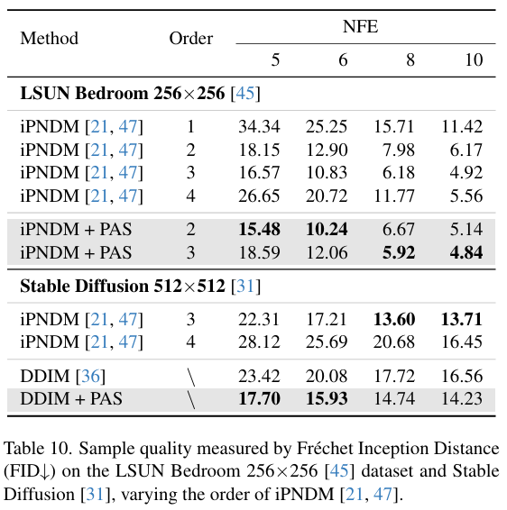
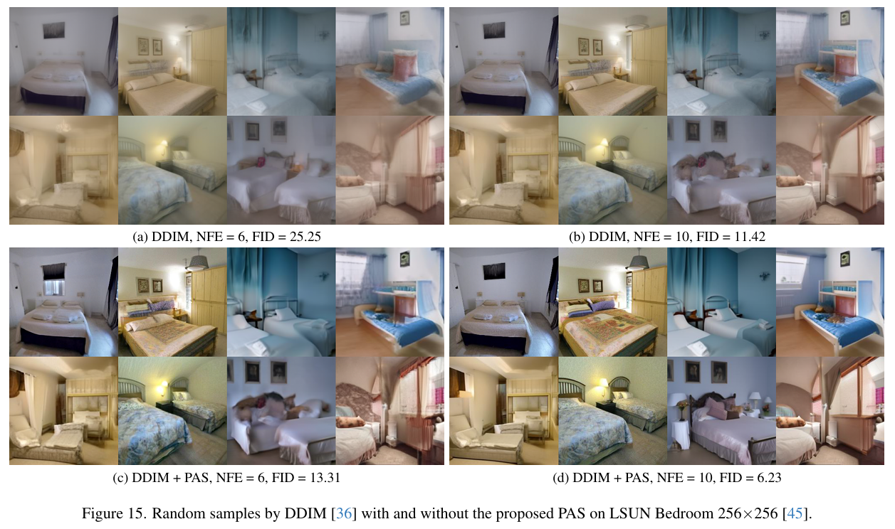

全文翻译
摘要
扩散概率模型（DPM）在生成任务中表现出了卓越的性能，但这是以采样效率为代价的。为了在不牺牲质量的前提下提高采样速度，最近提出了各种基于蒸馏的加速采样算法。然而，它们通常需要大量额外的训练成本和模型参数存储，这限制了它们的实际应用。在这项工作中，我们提出了基于主成分分析的自适应搜索（PAS），它用最少的可学习参数和训练成本优化了现有的DPM求解器。具体来说，我们首先使用主成分分析获得几个正交单位基向量来跨越高维采样空间，这使我们能够仅学习一组坐标来校正采样方向；此外，基于累积截断误差呈现“S”形的观察，我们设计了一种自适应搜索策略，进一步提高了采样效率，并将存储的参数数量减少到约10个。大量实验表明，PAS可以以即插即用的方式显著增强现有的快速求解器，且成本可忽略不计。例如，在CIFAR10上，PAS仅需要12个参数，在单个NVIDIA A100 GPU上训练不到1分钟，就可以将DDIM从15.69的FID（NFE=10）优化到4.37。
1. 引言
扩散概率模型（DPM）[10, 13, 35, 39, 40]在图像生成[7, 29]、文本到图像生成[3, 31]、视频生成[5]和语音合成[37]等各个领域都展现出了令人印象深刻的生成能力，受到了广泛关注。DPM通过正向过程向数据中引入噪声，然后在反向过程中通过迭代去噪生成实际输出。与生成对抗网络（GAN）[8]和变分自编码器（VAE）[16]等其他生成模型相比，DPM在生成高质量输出和保持训练稳定性方面具有优势。然而，DPM中的去噪过程通常需要数百或数千次迭代步骤，导致采样速度缓慢，严重阻碍了实际应用。
现有的加速DPM采样算法主要分为两类：无训练方法和基于训练的方法。无训练方法[2, 13, 21, 23, 24, 36, 47, 49, 50]通常通过解析方法设计快速求解器来减少每次采样迭代中的离散化误差，仅用20次函数评估（NFE）就能达到与原始1000次NFE相当的采样质量。然而，当NFE小于10时，这些方法中的累积截断误差会显著放大，导致采样不收敛，既无效又耗时。基于训练的方法[22, 32, 41, 44]通常能显著提高采样效率，有可能实现与原始1000次NFE质量相匹配的单步采样。尽管如此，这些方法往往需要高昂的计算成本并保存额外的模型参数。即使对于相对简单的CIFAR10数据集，它们也可能需要超过100个A100 GPU小时[32, 41]，这给实际应用带来了挑战。此外，基于训练的方法通常在噪声和数据分布之间建立新的路径，破坏了两个不连通模式之间的插值能力。
为了解决这些问题，我们提出了基于主成分分析的自适应搜索（PAS），这是一种可以以即插即用的方式用最少的训练成本和可学习参数校正现有快速求解器截断误差的方法。此外，PAS保留了两个不连通模式之间的插值能力。受之前关于DPM采样轨迹位于嵌入在高维空间中的低维子空间的观察[51]启发，我们提出使用主成分分析（PCA）在采样轨迹的高维空间中获取几个正交单位基向量，然后学习沿每个基向量的相应系数（即坐标）来确定正确的采样方向。这种方法避免了训练神经网络直接产生高维输出，显著减少了可学习参数的数量和训练成本。此外，我们观察到现有快速求解器的累积截断误差呈现“S”形。我们设计了一种自适应搜索策略来平衡需要校正的采样步骤和截断误差，这进一步提高了我们方法的采样效率，同时减少了存储所需的参数数量。我们在各种无条件和有条件的预训练DPM上验证了PAS的有效性，跨越了分辨率从32到512的五个数据集。结果表明，我们的方法可以以可忽略的成本显著提高图像质量。我们的贡献总结如下：
- 我们提出了一种新的即插即用训练范式，为现有的快速DPM求解器提供约10个参数，作为高成本基于训练算法的有效替代方案，使得可学习参数和训练成本可以忽略不计。
- 我们设计了一种自适应搜索策略来减少校正步骤，进一步提高了我们方法的采样效率并减少了存储参数。
- 跨各种数据集的大量实验验证了所提出的PAS方法在进一步提高现有快速求解器采样效率方面的有效性。
2. 背景
2.1. 正向和反向过程
扩散概率模型（DPM）[10, 13, 35, 39, 40]的目标是生成服从数据分布$q_{\text{data}}(x_0)$的D维随机变量$x_0 \in \mathbb{R}^D$。DPM通过正向扩散过程向数据分布中添加噪声；给定$x_0$，潜在变量$\{x_t \in \mathbb{R}^D\}_{t \in [0, T]}$定义为：
其中$\alpha_t \in \mathbb{R}$和$\sigma_t \in \mathbb{R}$是与时间步长t相关的标量函数。此外，Song等人[40]引入随机微分方程（SDE）来建模正向扩散过程，描述为：
其中$f(\cdot): \mathbb{R} \to \mathbb{R}$，$g(\cdot): \mathbb{R} \to \mathbb{R}$，且$w_t \in \mathbb{R}^D$是标准维纳过程[27]。将等式(1)和等式(2)结合，我们可以得到$f(t) = \frac{d \log \alpha_t}{dt}$和$g^2(t) = \frac{d \sigma_t^2}{dt} - 2 \frac{d \log \alpha_t}{dt} \sigma_t^2$。另外，Song等人[40]提供了从时间步长T到0的相应反向扩散过程如下：
其中$\nabla_x \log q_t(x_t)$被称为分数函数，可以通过神经网络估计。值得注意的是，Song等人[40]基于福克-普朗克方程[28]提出了一个与等式(3)在任何时间t具有相同边缘分布的概率流常微分方程（PF-ODE），其表达式如下：
与等式(3)不同，这个PF-ODE在采样过程中不引入噪声，使其成为确定性采样过程。由于其形式更简单且采样效率更高，在实际应用中比SDE更受青睐[23, 36, 40]。
2.2. 分数匹配
为了求解等式(4)中的PF-ODE，通常需要首先使用神经网络$s_\theta(x_t, t)$来估计未知的分数函数$\nabla_x \log q_t(x_t)$[39, 40]。神经网络$s_\theta$使用$L_2$损失进行训练，如下所示：
此外，Ho等人[10]提出使用噪声预测网络$\epsilon_\theta(x_t, t)$来预测在时间步长t添加到$x_t$的噪声。其他文献[13, 24]建议使用数据预测网络$x_\theta(x_t, t)$来直接预测不同时间步长t的$x_0$。这三个预测网络之间的关系可以表示为：
在本文中，我们采用EDM[13]的设置，具体来说$f(t) = 0$，$g(t) = \sqrt{2t}$，这是从等式(2)到(4)推导出来的，并且如等式(1)中所述$\alpha_t = 1$，$\sigma_t = t$。此外，利用噪声预测网络$\epsilon_\theta$，等式(4)可以表示为：
根据等式(7)中简单的PF-ODE形式，使用欧拉-丸山（欧拉）求解器[17]，从$t_i$到$t_{i-1}$的采样过程可以表示为：
其中$i \in [N, \cdots, 1]$且$t_N = T, \cdots, t_0 = 0$。
3. 提出的PAS方法
3.1. 基于PCA的采样校正
使用欧拉求解器[17]和等式(8)来近似等式(7)会引入显著的离散化误差，这些误差在迭代次数有限时会显著放大。等式(7)的精确解由下式给出：
令采样方向$d_{t_i} := \epsilon_\theta(x_{t_i}, t_i)$。现有的快速求解器通过各种数值近似来减少离散化误差。例如，PNDM[21]采用线性多步方法，而DPM-Solver[23, 24]利用泰勒展开来校正等式(8)中的采样方向$d_{t_i}$，以接近精确解$\int_{t_i}^{t_{i-1}} \epsilon_\theta(x_t, t) dt$。基于训练的方法[32, 41, 51]通常利用神经网络来校正方向$d_{t_i}$。与上述方法不同，我们使用PCA从采样轨迹的高维空间中提取几个正交单位基向量。通过学习这些基向量对应的坐标，我们将方向$d_{t_i}$校正为最优方向$\tilde{d}_{t_i}$，从而最小化训练成本。
具体来说，在从$x_{t_i}$到$x_{t_{i-1}}$的迭代过程中，我们首先从现有采样轨迹$\{x_{t_N}, \cdots, x_{t_i}\}$的空间中提取一组基向量，其中$t_N = T, \cdots, t_0 = 0$。一个令人惊讶的发现是，当对整个采样轨迹$\{x_{t_i}\}_{i=N}^0$进行PCA分解时，累积方差百分比迅速饱和；当主成分数量达到3时，累积方差百分比接近100%。
这表明整个采样轨迹位于嵌入在高维空间中的三维子空间中，这一发现最初在文献[51]中揭示。此外，根据等式(8)，$x_{t_{i-1}}$是$x_{t_i}$和$d_{t_i}$的线性组合，这使我们能够将现有轨迹$\{x_{t_N}, \cdots, x_{t_i}\}$修改为$\{x_{t_N}, d_{t_N}, \cdots, d_{t_{i+1}}\}$。当与利用历史梯度的现有多步求解器（如PNDM[21]、DEIS[47]等）结合时，这种修改使我们的方法能够在采样过程中共享缓冲区，以优化内存使用。为了验证这种修改的合理性，我们对完整的采样轨迹$\{x_T, \{d_{t_i}\}_{i=N}^1\}$进行PCA，得到的累积方差百分比如图2a所示，表明三个主成分足以跨越整个采样轨迹所占据的空间。 值得注意的是，不同样本的采样轨迹并不位于同一个三维子空间中。我们对来自K个样本的K条采样轨迹集合$\{\{x_{t_i}^k\}_{i=N}^0\}_{k=1}^K$应用PCA分解，得到的累积方差百分比如图2b所示。我们观察到，随着主成分数量的增加，累积方差百分比没有显示出饱和趋势。
| 图2. 我们利用PCA分析采样轨迹，展示主成分数量变化时累积方差百分比的趋势。轨迹来自使用EDM[13]预训练模型和Euler求解器[17]进行100次函数评估（NFE）的1k个样本。(a) 每个轨迹${x_T,{d_{t_i}}_{i=N}^1}$的平均结果。(b) K个轨迹 $\{\{x_{t_i}^k\}_{i=N}^0\}_{k=1}^K$ 的结果（FFHQ和ImageNet曲线几乎重叠）。 |
基于此，在从$x_{t_i}$到$x_{t_{i-1}}$的迭代过程中，我们分解现有采样轨迹，只需要前三个基向量来跨越采样轨迹的空间。令$X = \{x_{t_N}, d_{t_N}, \cdots, d_{t_{i+1}}\}$，其中$X \in \mathbb{R}^{(N-i+1) \times D}$，D表示$x_{t_N}$的维度。当使用前k个主成分时，过程描述如下：
其中SVD表示奇异值分解，$v_j \in \mathbb{R}^{D \times 1}$表示正交单位基向量。此外，由于我们的目标是校正当前方向$d_{t_i}$，我们通过直接指定$v_1 = d_{t_i} / |d_{t_i}|_2$来修改上述PCA过程。后续方法通常涉及计算x在基向量$v_1$上的投影，如下所示：
然后对$X - \text{proj}_{v_1}(X)$应用PCA分解，得到剩余的两个正交单位基向量。
为了进一步优化计算时间，我们省略了投影步骤。在指定$v_1 = d_{t_i} / |d_{t_i}|_2$后，我们按如下方式修改x：
其中$X’ \in \mathbb{R}^{(N-i+2) \times D}$。随后，我们使用等式(10)分解$X’$以获得$V’$，然后提取两个新的基向量$v_1’, v_2’ = V’[:, :2]$。由于省略了投影步骤，新的基向量可能与$v_1$共线。然而，我们只需要添加一个新的基向量$v_3’ = V’[:, 2]$，足以确保采样轨迹位于基向量的张成空间内。通过施密特正交化，我们可以获得新的正交单位基向量，如下所示：
其中Schmidt表示施密特正交化，$U \in \mathbb{R}^{D \times 4}$由四个正交单位基向量组成。值得注意的是，增加一个基向量相对于投影操作产生的计算成本更低，并且额外的单个参数可以认为是可忽略的。在获得跨越采样轨迹空间的基向量U后，我们可以初始化可学习的坐标参数。由于我们的目标是校正采样方向$d_{t_i}$，并且我们已经指定了第一个基向量$u_1 = v_1 = d_{t_i} / |d_{t_i}|_2$，我们将第一个坐标初始化为$c_1 = |d_{t_i}|_2$，其余坐标初始化为零，如下所示：
此时，我们有$d_{t_i} = U C^T$。通过训练，我们可以获得优化的C，从而获得校正后的方向$\tilde{d}_{t_i} = U \tilde{C}^T$。具体的基于PCA的采样校正示意图如图1所示。总之，我们采用PCA来校正采样方向，只需要几组坐标作为可学习参数。这种方法作为高成本基于训练算法的有效替代方案，利用了低维空间中采样轨迹的几何特征，从而显著减少了可学习参数的数量和训练成本。
| 图1. 基于PCA的采样校正。我们首先利用PCA获取一些正交单位向量来张成采样轨迹的空间，然后学习坐标以校正真实轨迹上大曲率区域的采样方向。 |
3.2. 训练和采样
为了在校正从$x_{t_i}$到$x_{t_{i-1}}$的迭代过程中的更新方向$d_{t_i}$，我们需要学习等式(15)中的坐标C，以应用于所有样本的采样轨迹。首先，给定任何一阶常微分方程求解器$\phi$，等式(9)的离散解可以统一表示为：
其中$d_{t_i} = U C^T = \epsilon_\theta(x_{t_i}, t_i)$。给定 ground truth $x_{t_{i-1}}^{gt}$，我们可以使用随机梯度下降（SGD）算法[30]训练坐标C，其中$L_2$损失更新过程如下：
其中$\alpha$表示学习率，$x_{t_{i-1}}^{gt}$的具体获取方法在3.3节中讨论。在通过等式(17)使用多个样本训练C后，我们获得训练后的坐标$\tilde{C}$。
在从$x_{t_i}$到$x_{t_{i-1}}$的迭代过程中，通过利用训练后的坐标$\tilde{C}$，我们可以将当前更新方向$d_{t_i}$校正为$\tilde{d}_{t_i} = U \tilde{C}^T$，从而获得更准确的$\bar{x}_{t_{i-1}}$，如下所示：
3.3. 自适应搜索
在3.1和3.2节中，我们介绍了如何使用我们的方法校正从$x_{t_i}$到$x_{t_{i-1}}$的迭代过程。本节描述如何使用我们的方法校正从$x_T$到$x_0$的迭代过程。首先，我们需要生成一个ground truth轨迹$\{x_{t_i}^{gt}\}_{i=N}^0$来校正$\{x_{t_i}\}_{i=N}^0$，其中$x_{t_N}^{gt} = x_{t_N}$。在本文中，我们对采样和生成ground truth轨迹都采用广泛使用的多项式时间调度[13]，其表示如下：
其中$t_N = T, \cdots, t_0 = \epsilon$，$\epsilon$是一个接近零的值。为了获得ground truth轨迹，我们只需在等式(19)的时间调度中插入更多的采样步骤，以获得更准确的解。具体来说，考虑在训练期间使用具有$N’$次NFE的教师欧拉求解器来指导具有$N (< N’)$次NFE的学生欧拉求解器。首先，我们在学生求解器的时间调度中插入M个值，使得M是满足$N(M+1) \geq N’$的最小正整数。接下来，我们使用等式(19)生成教师求解器的时间调度：$t_{N(M+1)} = T, \cdots, t_0 = \epsilon$。最后，我们只需要使用$i \in [N, \cdots, 0]$索引教师求解器中的$x_{t_{i(M+1)}}$，从而获得ground truth轨迹$\{x_{t_i}^{gt}\}_{i=N}^0 = \{x_{t_{i(M+1)}}\}_{i=N}^0$。
在获得ground truth轨迹$\{x_{t_i}^{gt}\}_{i=N}^0$后，我们需要依次校正$d_{t_N}, \cdots, d_{t_1}$。这是因为一旦$d_{t_N}$被校正为$\tilde{d}_{t_N}$，$x_{t_{N-1}}$将相应地调整为$\tilde{x}_{t_{N-1}}$。这进一步修改了下一个时间点需要校正的方向：$d_{t_{N-1}} = \epsilon_\theta(\tilde{x}_{t_{N-1}}, t_{N-1})$。通常，我们需要依次校正N个方向，存储$4N$个学习的坐标参数，并在采样期间校正N个迭代过程。然而，为了进一步降低采样过程中的额外计算成本和存储的坐标参数数量，我们提出了一种自适应搜索策略。具体来说，现有求解器的累积截断误差呈现出“S”形趋势，如图3a所示，表明它最初增长缓慢，然后迅速增加，最终恢复到缓慢增长速率。因此，我们可以推断采样轨迹首先呈现线性，然后过渡到曲线，最终在某种模式的吸引下再次变为线性。因此，只有采样轨迹中曲率大的部分需要校正；线性部分不需要。我们使用PCA来获得包含采样轨迹的空间的基，也是为了补偿在曲率大的情况下由于等式(9)的离散化而在其他基中缺失的方向。自适应搜索的具体实现由优化状态的损失决定。当使用$L_2$损失时，我们得到：
其中$\tilde{x}_{t_{i-1}}$是校正后的状态。我们引入容差$\tau$来确定$L_2 - (L_1 + \tau)$是否大于零。如果大于零，则该步骤需要校正；否则，该步骤被认为位于采样轨迹的线性部分，不需要校正。容差$\tau$设置为正值，例如$10^{-4}$。使用我们的算法校正后的截断误差如图3b所示，清楚地显示出在大曲率区域截断误差显著降低。现在我们已经详细介绍了提出的基于PCA的自适应搜索（PAS）算法，在算法1和算法2中详细说明了完整的训练和采样过程。具体示意图如图4所示。
| 图3. 使用和不使用所提出的PAS时，通过Euler求解器[17]评估的截断误差。我们使用EDM[13]预训练模型采样10k个样本，并计算10次NFE与真实轨迹（100次NFE）的平均L2距离。(a) Euler求解器产生的“S”形截断误差。(b) 使用PAS校正后的截断误差。值得注意的是，PAS自适应地仅校正采样轨迹中曲率大的部分。 |
| 图4. 基于PCA的自适应搜索（PAS）示意图。我们展示了结合所提出PAS方法的Euler求解器[17]，其中采样方向源自真实轨迹的切线方向。采样方向校正过程的细节见图1。 |
| 图5. 使用和不使用所提出PAS的DDIM可视化结果。左：指导尺度为7.5的Stable Diffusion v1.4采样结果。右：CIFAR10、FFHQ 64×64、ImageNet 64×64和LSUN Bedroom 256×256数据集的采样结果。 |
3.4. 与基于训练的方法比较
如第1节所讨论的，虽然基于训练的方法可以实现单步采样[22, 32, 41, 44]，但它们通常需要大量的训练成本（例如，在简单的CIFAR10上超过100个A100 GPU小时）。此外，这些方法往往会破坏原始的ODE轨迹，导致两个不连通模式之间的插值能力丧失。尽管已经提出了一些低成本训练方法[1, 11, 14, 15, 26, 46, 51]，如附录A中所讨论的，这些方法仍然没有解决根本问题，并且需要训练一个新的相对较小的神经网络。
与这些方法相比，PAS引入了一种新的训练范式，通过学习低维坐标来校正高维向量，实现了最小的可学习参数和训练成本。例如，使用单个NVIDIA A100 GPU，在CIFAR10上训练仅需0-2分钟，在最大分辨率为256的数据集上仅需10-20分钟。此外，基于自适应搜索，PAS在CIFAR10上只需要校正1-3个时间点，如表1所示（附加数据集的结果，见附录C.1中的表6）。这意味着PAS在采样校正过程中只需要4-12个参数，这与上述基于训练的方法不在同一数量级。此外，PAS保留了原始的ODE轨迹，从而保留了DPM的插值能力。
| 表1. 在CIFAR10上，PAS为DDIM和iPNDM求解器校正的时间点i，范围从(N)到1。 |
| 表6. 对应于表2和表3，PAS为DDIM[36]和iPNDM[21, 47]求解器校正的时间点i，范围从(N)到1。 |
4. 实验
4.1. 实验设置
在本文中，我们统一采用EDM框架[13]的设计，如等式(7)所示。关于时间调度，我们使用广泛应用的多项式调度，其中$\rho = 7$，如等式(19)所述。
数据集和预训练模型：我们在广泛的图像分辨率（从32到512）上应用PAS。这包括CIFAR10 32×32[18]、FFHQ 64×64[12]、ImageNet 64×64[6]、LSUN Bedroom 256×256[45]，以及由Stable Diffusion v1.4[31]生成的512分辨率图像。其中，CIFAR10、FFHQ和LSUN Bedroom数据集来自像素空间无条件预训练模型[13, 41]；ImageNet来自像素空间有条件预训练模型[13]；而Stable Diffusion v1.4[31]属于条件潜空间预训练模型。
求解器：我们提供了先前最先进的快速求解器的比较结果，包括DDIM[36]、Heun’s 2nd[13]、DPM-Solver-2[23]、DPM-Solver++[24]、DEIStAB3[47]、UniPC[49]、DPM-Solver-v3[50]和改进的PNDM（iPNDM）[21, 47]。
评估：我们使用广泛采用的Fréchet Inception Distance（FID）[9]指标来评估样本质量。对于Stable Diffusion，我们从MS-COCO[20]验证集采样10k个样本以计算FID，而对于其他数据集，我们统一采样50k个样本。
训练：在4.3节和附录C.2中，我们展示了与训练中涉及的超参数相关的消融实验，附录B提供了我们使用的不同数据集的详细训练配置。下面，我们概述了一些推荐的训练超参数设置：使用EDM中的Heun’s 2nd求解器[13]生成5k个具有100次NFE的ground truth轨迹，采用$L_1$损失函数，将学习率设置为$10^{-2}$，并使用$10^{-4}$的容差$\tau$。
4.2. 主要结果
在本节中，我们展示了PAS在各种数据集和预训练模型上的实验结果，其中NFE ∈ {5, 6, 8, 10}。在表2中，我们报告了PAS校正DDIM（相当于EDM框架[13]中的欧拉求解器[17]）和iPNDM求解器的实验结果，涵盖了CIFAR10、FFHQ、ImageNet和LSUN Bedroom数据集。值得注意的是，对于LSUN Bedroom，iPNDM的阶数设置为2；对于其他数据集，阶数设置为3，这产生了更好的平均性能（有关iPNDM阶数的更多结果，见附录C.3）。实验结果表明，无论是处理高分辨率还是低分辨率、有条件还是无条件的预训练模型，PAS都能有效提高DDIM和iPNDM求解器的采样质量。特别是，PAS与iPNDM结合超越了先前最先进的求解器。值得注意的是，PAS在NFE较少的情况下显著优化了DDIM求解器的收敛性；例如，在10次NFE时，PAS在CIFAR10、FFHQ、ImageNet和LSUN Bedroom数据集上分别实现了4.37、5.61、9.13和6.23的FID分数。对于Stable Diffusion，我们报告了PAS校正DDIM的实验结果。此外，我们引入了先前最先进的方法，包括DPM-Solver++、UniPC和DPM-Solver-v3，以进行比较。这些方法在Stable Diffusion上利用了它们的最佳配置，包括2M版本和logSNR调度[23]等。如表3所示，PAS显著提高了Stable Diffusion上DDIM的采样质量。值得注意的是，PAS与DDIM结合的性能超过了先前最先进方法的采样结果，进一步验证了所提出的PAS的有效性。
| 表2. 在CIFAR10、FFHQ、ImageNet和LSUN Bedroom数据集上，通过Fréchet初始距离（FID）衡量的样本质量。“\”表示由于算法固有特性导致数据缺失。 |
| 表3. 在指导尺度为7.5的Stable Diffusion v1.4上，通过FID衡量的样本质量。†我们直接借用Zheng等人[50]报告的结果。 |
4.3. 消融实验
在本节中，我们对训练过程中使用的几个关键模块进行消融实验，如图6所示。此外，关于学习率、生成轨迹的求解器和容差$\tau$的消融实验在附录C.2中呈现。值得注意的是，整个PAS中这些模块的选择不是一个关键因素，并且对性能的影响很小。
自适应搜索：在图6a中，我们展示了比较有和没有自适应搜索策略（-AS）的PAS的实验结果。研究结果表明，PAS(-AS)的采样质量甚至比DDIM差。这种退化可能归因于采样轨迹中的线性段，其中来自DDIM的误差可以忽略不计。然而，基于PCA的采样校正不会减少误差，而是在其他基向量中引入偏差。这进一步验证了所提出的整体PAS的必要性和有效性。
损失函数：我们评估了$L_1$、$L_2$和先前建立的有效损失函数：LPIPS[48]和Pseudo-Huber[38]。在这里，Pseudo-Huber的超参数c按照Song和Dhariwal[38]的建议设置为0.03。结果如图6b所示。令人惊讶的是，LPIPS表现出最低的平均性能。总体而言，$L_1$损失函数表现出优异的平均性能，这可能归因于其较大的规模。
基向量数量：我们通过改变使用的基向量数量来展示消融结果，如图6c所示。实验结果表明，PAS仅使用前2个基向量就可以显著提高DDIM的采样质量，而使用前3或4个向量则产生稍好的性能。值得注意的是，图6c中呈现的实验结果与图2a中的结果具有相同的趋势，进一步验证了DPM的采样轨迹位于低维子空间中。四个基向量足以跨越采样轨迹空间，使PAS与其他基于训练的算法相比能够实现最小的训练成本和可学习参数。
轨迹数量：在图6d中，我们将ground truth轨迹的数量从500变化到20k。我们发现，即使从少至500条轨迹中学习坐标，也可以显著提高DDIM的采样质量。这表明所有样本的采样轨迹表现出强烈一致的几何特征，特别是“S”形截断误差。这也解释了为什么一组坐标可以有效地适应单个数据集中的所有样本。然而，增加轨迹数量通常会导致学习到的坐标更具泛化性，5k条轨迹是最佳平衡。
 |
|---|
| 图6. 在CIFAR10上使用PAS校正DDIM的消融研究，探讨自适应搜索、损失函数、正交单位基向量数量和真实轨迹数量对FID的影响（推荐设置：红色实线）。 |
5. 结论
在本文中，我们介绍了一种新颖的训练范式PAS，用于以最小的训练成本和可学习参数加速DPM。我们的关键策略是通过PCA获取几个基向量，然后学习其低维坐标以校正高维采样方向向量。此外，基于现有快速求解器的截断误差呈现“S”形的观察，我们设计了一种自适应搜索策略来平衡校正步骤，进一步提高采样效率并将存储的参数数量减少到约10个。在无条件和有条件预训练DPM上的大量实验表明，PAS可以以即插即用的方式显著提高现有快速求解器（如DDIM和iPNDM）的采样质量。
A. 相关工作
低成本训练
先前的研究[22, 32, 41]表明，直接学习噪声和数据分布之间的映射需要高昂的训练成本才能实现最少步骤的采样。最近，已经提出了几种低成本训练方法。Kim等人[14]和Hsiao等人[11]探索了如何减少学生模型中的参数数量以实现高效蒸馏。Bao等人[1]、Kim等人[15]和Na等人[26]通过训练较小的神经网络来校正采样过程中产生的误差。Zhang等人[46]建议仅在采样的最后一步训练神经网络以消除累积残差，从而降低训练成本。Zhou等人[51]通过使用中值定理减少神经网络的输出维度来优化训练开销。然而，这些方法通常仍然需要训练一个新的相对较小的神经网络。与这些方法不同，所提出的PAS方法只需要学习几组坐标，从而最小化了可学习参数和训练成本。
即插即用加速
许多研究[4, 19, 25, 33, 34, 42, 43]探索了加速现有快速求解器的方法，如DDIM[36]、DPM-Solver[23, 24]、PNDM[21]和DEIS[47]。具体来说，Ma等人[25]和Wimbauer等人[42]通过缓存神经网络的低级特征来减少其计算负荷。Li等人[19]和Chen等人[4]建议搜索最佳采样调度以在更少的步骤中提高采样质量。Shih等人[33]提出利用更多的计算资源并实现并行化采样过程以缩短采样时间。与这些研究正交，所提出的PAS方法为DPM中的加速采样引入了新的正交轴，可以进一步与这些方法集成以提高现有快速求解器的采样效率。
B. 训练细节与讨论
在本节中，我们提供了PAS针对不同求解器（包括DDIM[36]和iPNDM[21,47]）在各种数据集上进行校正的训练细节。除非在消融实验或特殊说明中提及，否则所有与训练相关的实验设置均基于本节所述。首先，我们概述一些常见的实验设置：我们使用EDM[13]中的Heun’s 2nd求解器（100次NFE）来生成ground truth轨迹。我们统一应用四个正交单位基向量（其中$u_1 = d_{t_{i+1}} / \left|d_{t_{i+1}}\right|_2$）来校正采样方向。值得注意的是，对于等式(10)中的PCA过程，我们使用torch.pca_lowrank函数来获取基向量，因为它比torch.svd具有更快的计算速度。其次，其他超参数如学习率、损失函数、ground truth轨迹数量和容差τ在表4中指定。
| 表4. 当使用PAS校正不同数据集和预训练模型上的DDIM[36]和iPNDM[21, 47]求解器时，学习率（LR）、损失函数（Loss）、真实轨迹数量（Trajectory）和容差T（Tolerance）的训练设置。 |
关于上述超参数设置，我们在4.3节和附录C.2中进行了广泛的消融实验，以阐明这些选择的理由。此外，我们注意到超参数设置对DDIM校正的影响不是一个关键因素，因为DDIM表现出较大的截断误差；无论超参数如何配置，PAS都能显著提高DDIM的采样质量。相比之下，由于iPNDM求解器的采样质量已经相对较高，因此在使用PAS时需要调整某些超参数以获得更好的FID分数。然而，由于PAS的训练成本极低（在单个NVIDIA A100 GPU上，CIFAR10仅需0-2分钟，分辨率为256的较大数据集仅需10-20分钟），我们可以轻松进行超参数搜索。巧合的是，最终的训练损失可以作为评估超参数选择有效性的参考。
关于超参数搜索建议，对于截断误差较大的求解器（例如DDIM[36]），我们建议使用$10^{-2}$的学习率、$L_1$损失函数、5k条ground truth轨迹和$10^{-2}$的容差τ，这通常适用于所有数据集。相反，对于截断误差较小的求解器（例如iPNDM[21,47]），我们建议针对不同数据集在$10^{-4}$到10的范围内进行学习率搜索，同时固定$L_1$损失函数，使用5k条ground truth轨迹，将容差τ设置为$10^{-4}$。
需要强调的是，生成样本质量的主流评估指标是FID；然而，没有相应的FID损失函数。因此，当使用$L_1$或$L_2$损失函数训练坐标时，即使在iPNDM求解器的校正过程中FID分数没有提高，$L_1$和$L_2$指标也会显示出改善，如表11所示。这进一步证实了所提出的PAS作为即插即用校正算法的有效性。
| 表11. 在CIFAR10 32×32[18]数据集上，通过Fréchet初始距离（FID）、L2（MSE）和L1↓指标衡量的样本质量，改变iPNDM[21, 47]的阶数。L2（MSE）和L1指标是针对使用50k样本的100次NFE的Heun的2阶求解器[13]评估的。 |
C. 附加实验结果
C.1. 关于NFE和校正时间点的附加结果
在本节中，我们首先将CIFAR10 32×32[18]和FFHQ 64×64[12]数据集上的FID结果扩展到更多NFE值（NFE ∈ {4,5,6,7,8,9,10}）。PAS校正DDIM[36]和iPNDM[21,47]（阶数为3）的结果如表5所示（关于iPNDM阶数的更多结果，见附录C.3）。结果表明，PAS可在不同NFE下显著提升DDIM和iPNDM的采样质量。
| 表5. 在CIFAR10 32×32[18]、FFHQ 64×64[12]数据集上，函数评估次数（NFE）从4到10变化时，通过Fréchet初始距离（FID）衡量的样本质量。“\”表示由于算法固有特性导致数据缺失。 |
此外，在表6中，我们展示了PAS对不同数据集上DDIM和iPNDM求解器的校正时间点，对应于表2和表3。从表6可以看出，截断误差较大的DDIM需要校正更多采样步骤，而截断误差较小的iPNDM需要的校正步骤相对较少，这与我们的直觉一致。总体而言，PAS只需校正1-5个时间点（对应仅需4-20个可学习参数），即可显著提升基线求解器的采样质量，验证了PAS作为训练成本极低的加速算法的有效性。
C.2. 附加消融实验结果
在本节中，我们首先补充关于自适应搜索的附加消融实验，随后提供关于学习率、容差τ和生成轨迹求解器的进一步消融实验。
自适应搜索的更多结果：关于自适应搜索策略，我们首先在CIFAR10 32×32[18]数据集上补充了图6a对应的具体FID值，如表7所示。此外，在表7中，我们还提供了FFHQ 64×64[12]数据集上使用PAS和不含自适应搜索策略的PAS（PAS(-AS)）校正DDIM[36]的实验结果。与图6a的结果一致，当不使用自适应搜索策略（即在每个时间步应用基于PCA的采样校正）时，采样质量低于基线DDIM。此外，由于每个步骤都需要基于PCA的采样校正，缺少自适应搜索策略会增加计算时间。在3.3节中，我们描述了所提出的自适应搜索策略的动机和过程。我们分析了ground truth轨迹从直线过渡到曲线，最终又回到直线的过程。自适应搜索旨在校正采样轨迹大曲率区域的误差。在直线段，现有快速求解器（如DDIM）引入的误差可忽略不计，应用基于PCA的采样校正不仅无法进一步调整误差，反而会在其他基向量中引入偏差，导致采样质量下降。因此，必须将自适应搜索策略与基于PCA的采样校正结合使用，专门校正采样轨迹高曲率区域的截断误差。结合图6a和表7，进一步验证了所提出的整体算法（基于PCA的自适应搜索，PAS）的必要性和有效性。
| 表7. 在CIFAR10 32×32[18]和FFHQ 64×64[12]数据集上，关于自适应搜索的消融研究，使用PAS和不使用自适应搜索的PAS（PAS (-AS)）校正DDIM[36]。我们报告了函数评估次数（NFE）变化时的Fréchet初始距离（FID）分数。 |
学习率：在图7中，我们展示了PAS在CIFAR10 32×32[18]数据集上校正DDIM[36]和iPNDM[21,47]（阶数为3）的消融结果。我们将学习率从$10^{-4}$到10进行了变化。结果表明，无论学习率如何设置，PAS都能显著提升CIFAR10上DDIM和iPNDM的采样质量，进一步探索显示出稍好的采样性能。
| 图7. 在CIFAR10 32×32上使用PAS校正DDIM[36]和iPNDM[21, 47]求解器的学习率消融研究。我们报告了函数评估次数（NFE）变化时的Fréchet初始距离（FID）分数。 |
容差τ：在3.3节中，我们设计了自适应搜索策略以提升基于PCA的采样校正的整体性能。该自适应搜索策略依赖于条件$L_2 - (L_1 + τ) > 0$。因此，我们进一步研究了容差τ对自适应搜索策略的影响。需要强调的是，自适应搜索策略旨在校正采样轨迹的大曲率部分，而容差τ作为判断当前采样状态是否到达轨迹大曲率区域的标准。因此，容差τ最初被视为指示开始校正时间点的超参数，后续时间点的容差τ固定为$10^{-4}$。我们将初始校正点的容差τ从$10^{-1}$调整到$10^{-4}$，CIFAR10 32×32[18]数据集的实验结果如表8所示。实验结果表明，PAS对超参数容差τ的配置不敏感。当容差τ在$10^{-2}$到$10^{-4}$范围内时，PAS始终能显著提升DDIM[36]和iPNDM[21,47]求解器的采样质量。最后，我们建议对截断误差较大的求解器（如DDIM）设置容差τ为$10^{-2}$，而对截断误差相对较小的求解器（如iPNDM），容差τ应设置为$10^{-4}$。
| 表8. 在CIFAR10 32×32[18]上，关于容差τ的消融研究，使用PAS校正DDIM[36]和iPNDM[21, 47]求解器。我们报告了函数评估次数（NFE）变化时的Fréchet初始距离（FID）分数。 |
生成轨迹的求解器：我们使用CIFAR10 32×32[18]和FFHQ 64×64[12]数据集，研究了生成ground truth轨迹的求解器选择对PAS性能的影响。我们使用Heun’s 2nd[13]、DDIM[36]和DPM-Solver-2[23]求解器（100次NFE）生成10k条轨迹，用于训练PAS校正DDIM求解器，如表9所示。我们的发现表明，生成ground truth轨迹的求解器选择对PAS的性能影响可忽略不计。这表明无论使用何种求解器，足够的NFE（如100次NFE）都能使求解过程接近ground truth轨迹。因此，我们在所有实验中简单固定使用Heun’s 2nd求解器。
| 表9. 在CIFAR10 32×32[18]和FFHQ 64×64[12]上，关于生成真实轨迹的求解器的消融研究，包括Heun的2阶（Heun）[13]、DDIM[36]和DPM-Solver-2（DPM）[23]。我们报告了使用PAS校正DDIM[36]时，函数评估次数（NFE）变化的Fréchet初始距离（FID）分数。 |
C.3. 关于iPNDM阶数的附加结果
在本节中，我们讨论了为何在表2中主要选择PAS校正阶数为3的iPNDM。首先，我们通过调整iPNDM的阶数，在CIFAR10 32×32[18]、LSUN Bedroom 256×256[45]数据集和Stable Diffusion[31]上评估了采样质量，如表10和表11所示。我们发现，增加iPNDM的阶数并不总是提升采样质量。特别是在高分辨率数据集上，iPNDM阶数为4时通常无法达到最佳采样质量；相比之下，iPNDM阶数为3表现出更好的平均性能。因此，我们在表2中主要选择PAS校正阶数为3的iPNDM。
|  |
|---|
| 表10. 在LSUN Bedroom 256×256[45]数据集和Stable Diffusion[31]上，通过Fréchet初始距离（FID）衡量的样本质量，改变iPNDM[21, 47]的阶数。 |
此外，在低分辨率数据集（如CIFAR10 32×32[18]）上，iPNDM阶数为4表现出最佳性能。因此，我们使用PAS校正其截断误差；然而，我们观察到其FID分数没有提升。不过，由PAS校正的阶数为4的iPNDM在$L_1$和$L_2$指标上表现更好，如表11所示。这种现象可能是由于PAS在训练期间使用$L_1$或$L_2$损失函数，当求解器的采样质量已相对令人满意时，$L_1$、$L_2$指标与FID分数之间并不总是一致。
C.4. 附加可视化研究结果
我们展示了使用Stable Diffusion v1.4[31]的附加可视化采样结果，如图8所示。此外，在图9至图16中展示了CIFAR10 32×32[18]、FFHQ 64×64[12]、ImageNet 64×64[6]和LSUN Bedroom 256×256[45]数据集上NFE为6和10的更多可视化结果。这些可视化结果表明，与相应基线相比，PAS生成的样本具有更高质量和更丰富的细节。
| 图8. 在指导尺度为7.5的Stable Diffusion v1.4上，使用和不使用所提出PAS的DDIM[36]随机样本。 |
| 图9. 在CIFAR10 32×32上，使用和不使用所提出PAS的DDIM[36]随机样本。 |
| 图10. 在CIFAR10 32×32上，使用和不使用所提出PAS的iPNDM[21, 47]随机样本。 |
| 图11. 在FFHQ 64×64上，使用和不使用所提出PAS的DDIM[36]随机样本。 |
| 图12. 在FFHQ 64×64上，使用和不使用所提出PAS的iPNDM[21, 47]随机样本。 |
| 图13. 在ImageNet 64×64上，使用和不使用所提出PAS的DDIM[36]随机样本。 |
| 图14. 在ImageNet 64×64上，使用和不使用所提出PAS的iPNDM[21, 47]随机样本。 |
|  |
|---|
| 图15. 在LSUN Bedroom 256×256上，使用和不使用所提出PAS的DDIM[36]随机样本。 |
| 图16. 在LSUN Bedroom 256×256上，使用和不使用所提出PAS的iPNDM[21, 47]随机样本。 |